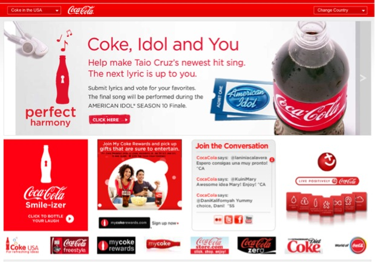

Teaching Presentation on Repetition in Web Design
What Is Repetition?
In the world of web design, repetition simply means to repeat certain aspects or elements in a design.
Why Should I Use Repetition?
Having repeating elements in a website’s design can help to unify the design, and improve the user’s experience.
Common Examples of Repetition
A company’s logo is often repeated on each page of their website, in the same place, on every page. Logos are usually clickable, and often, clicking on a logo will bring you back to the main page of a website.

Many companies put a navigation bar in the same place on every page of their website. This allows users to easily be able to move between the pages.

Many websites use repetition in their color scheme.
Fonts, shapes, and textures are also common elements of a website that are often repeated.
One other thing that repetition is used for, is the reinforcement of a message. By seeing a message that is repeated over and over again, users are more likely to remember it.
Sources
- Interaction-Design.org
- Google Images
- Visual FOCUS by Caryn Esplin